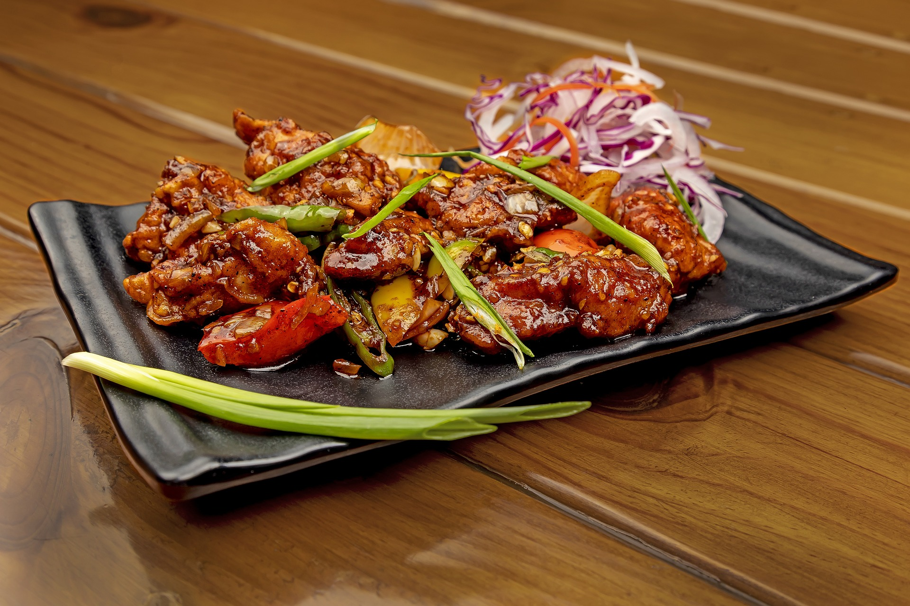

Sunday, 9 April 2023
Santorini
Santorini is a stunning Greek island known for its iconic whitewashed buildings and breathtaking views of the Aegean Sea. Visitors can enjoy its charming villages, beautiful beaches, and delicious cuisine. It's a romantic Mediterranean destination that shouldn't be missed.
Sunday, 9 April 2023
Delicious asian food
Asian cuisine is diverse, flavorful, and beautifully presented. From Thai curries to Chinese dumplings, there's something for everyone to enjoy. It's a must-try experience for any food lover.

Sunday, 9 April 2023
How to plan
A well-planned trip can make all the difference. From choosing your destination to booking your accommodations, careful preparation can save you time, money, and hassle. With a solid travel plan, you can relax and enjoy your adventure.

Sunday, 9 April 2023
Cats are everywhere
Mediterranean cats are a familiar sight in coastal towns, often seen basking in the sun or wandering the streets. These friendly felines add a charming touch to the region's landscape and are a popular attraction for visitors.

Sunday, 9 April 2023
Capturing Memories
Photography is crucial to travel, capturing memories and the essence of a place. With modern technology, it's easy to take high-quality photos and share them with others. Whether you're a pro or a casual traveler, photography enhances the experience.

Sunday, 9 April 2023
Tipps for a cool accommodation
Choosing a unique accommodation is key to having an unforgettable trip. Seek out properties that offer local charm and character, such as boutique hotels. Remember to consider location, amenities, and price to ensure a comfortable and enjoyable stay.